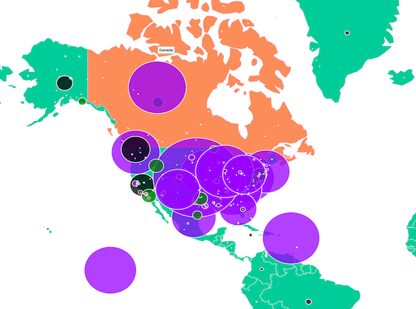

This site presents the results of three data science assignments (CS 599 / DSCI 550, Spring 2018) in which students took a core dataset of 60,000+ UFO sightings (1906–2007; example source data on Kaggle) and enriched it using Apache Tika for parsing, Tesseract OCR on the British Ministry of Defence UFO files, and deep learning (TensorFlow/Inception models) for automatic object recognition and neural image captioning on photos from the UFO Stalker collection.
Students joined the sightings with airports, population, and other public datasets (different MIME types), computed features such as distance-to-airport, performed similarity/clustering analysis with Tika-Similarity (Jaccard, cosine, edit distance), built 10+ interactive D3.js visualizations per team, and deployed MEMEX ImageCat + ImageSpace for content-based image search and forensics. The visualizations and tools you see here are the student-built “mini sites” and gallery that resulted.
Students built 10+ interactive visualizations per team (maps vs. airports, timelines, similarity dendrograms, image-object galleries, etc.) on the enriched sightings data produced by joining, OCR, and deep-learning captioning/object recognition steps.

The visualizations in this gallery are the result of three hands-on data science assignments where students enriched a core set of 60,000+ UFO sightings (example source data on Kaggle) using Apache Tika, OCR, and deep learning, then built interactive D3.js experiences and image-similarity search tools on top of the data.
Browse the Student Visualizations
Originally many of the dynamic views queried Apache Solr and Elasticsearch. Image similarity and forensics are powered by MEMEX ImageCat + ImageSpace.
ImageCat (from the chrismattmann/imagecat repo) is an OODT/RADIX app that ingests tens of millions of images, extracts EXIF metadata and OCR text via Tika + Tesseract (see Tika's Tesseract integration), and loads everything into Solr for search.
ImageSpace (from the nasa-jpl-memex/image_space repo, part of the DARPA MEMEX program) builds on ImageCat to let you browse, search, and find similar images (sourced from the UFO Stalker collection) using computer vision, metadata, OCR, and plugins like FLANN and SMQTK. See nasa-jpl-memex.github.io for more.
The Information Retrieval and Data Science Group’s (I.R.D.S.) mission is to research and develop new methodology and open source software to analyze, ingest, process, and manage Big Data and to turn it into information.
We have expertise in data collection and contribute to the world's largest and most often downloaded open-source projects, working with NASA, DARPA, DHS, NIH across a number of domains, Earth Science,Planetary Science, Astronomy, defense, and private industry.